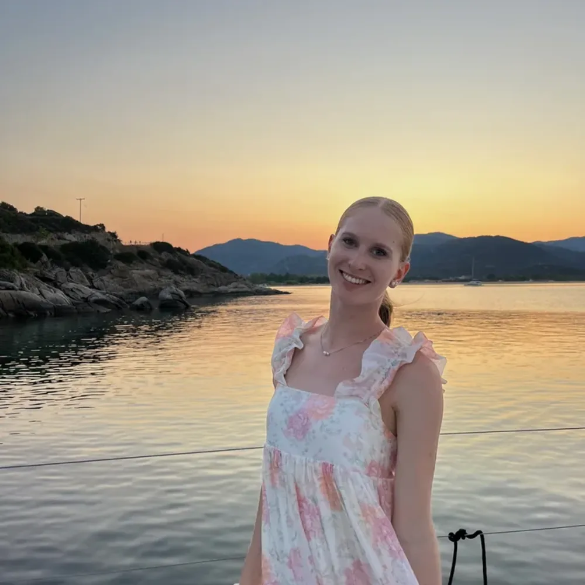

Kačí
Lektorka · čeština
Ahooj! Jmenuji se Kačí a studuji na Pedagogické fakultě Západočeské univerzity v Plzni. Práce s dětmi je pro mě nejen součástí studia, ale také něco, co mě dlouhodobě baví a naplňuje. Ve volném čase se věnuji sportu a trénování dětí, díky čemuž mám zkušenosti s vedením kolektivu. Ve výuce se snažím, aby se děti cítily bezpečně, nebály se zeptat a postupně získávaly jistotu ve svých znalostech. Důležité je pro mě vysvětlovat učivo srozumitelně, trpělivě a ukazovat, že i náročnější úlohy se dají zvládnout krok po kroku. Věřím, že příprava na přijímací zkoušky nemusí být jen stresujícím obdobím, ale může být také příležitostí objevit nové schopnosti. Budu se těšit na společnou jízdu na našich kurzech!